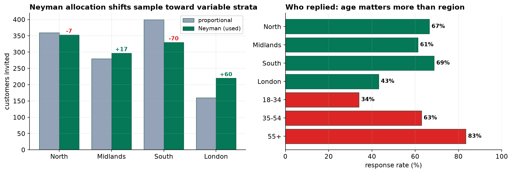
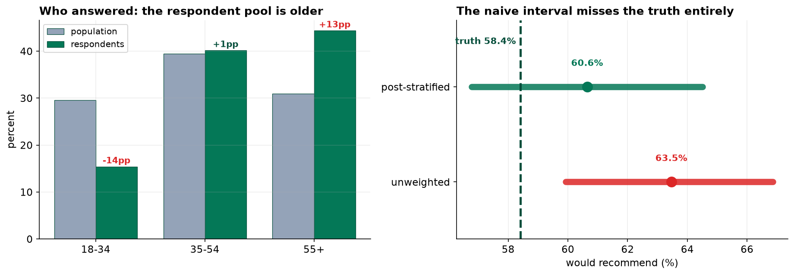

This capstone can do something none of the previous sixteen could. Because the population is simulated, the true answer is knowable, so we can run the analysis the way most surveys are actually run, and then check it against reality.
The naive respondent estimate is 63.5% would recommend, with a margin of error of 3.5 points. The truth is 58.4%. The naive interval does not merely miss it, it excludes it. Post-stratification recovers 60.6%, and that interval does contain the truth.
The Plan, Written Before Anything Was Collected
Five decisions, all made in advance and all recorded on the SamplingPlan sheet of the workbook. They are the reason this survey can be defended later.
| Step | Decision | Consequence |
|---|---|---|
| D1 Population | All 60,000 active retail customers on the register | Defines what the estimate is an estimate of |
| D2 Frame | Customers with a usable contact record: 55,462 | 4,538 customers (7.6%) have zero chance of selection |
| D3 Method | Stratified by region, Neyman allocation | Estimates per region; unequal rates need weighting |
| D4 Size | 1,200 invited against 1,050 needed | Realized precision 3.5 points, not the 3.0 requested |
| D5 Instrument | Six questions; region and age carried from the frame | Non-response can be analyzed, not guessed at |
Reaching 1,050 usable responses at an expected 65 percent response rate needs about 1,616 invitations. The budget allowed 1,200. That is a legitimate decision, and the plan records it along with its cost: the survey will land near 3.5 points of precision rather than 3.0. A plan that quietly promises precision the budget cannot buy is worse than one that names the gap up front.
Where to Spend the Sample
Region is the stratum, because the business needs an estimate for each and because satisfaction genuinely differs between them. The interesting decision is how to split 1,200 invitations across the four.
| Region | Customers | Pilot SD | Proportional | Neyman (used) | Shift |
|---|---|---|---|---|---|
| North | 18,000 | 1.25 | 360 | 353 | −7 |
| Midlands | 14,000 | 1.35 | 280 | 297 | +17 |
| South | 20,000 | 1.05 | 400 | 330 | −70 |
| London | 8,000 | 1.75 | 160 | 220 | +60 |
Proportional allocation feels fair and is not optimal. Precision is limited by where the variation is. A stratum whose members all answer alike needs few observations to pin down; a stratum whose members disagree needs more. Neyman allocation makes each stratum's share proportional to its size times its standard deviation.
So London, 13 percent of customers, takes 18 percent of the sample, because London customers disagree with each other more than anyone else (SD 1.75 against the South's 1.05). The South gives up 70 invitations because Southern customers are unusually consistent and cheap to estimate.

The Instrument, and One Decision That Saves the Study
Region and age band come from the frame, so we hold them for every customer we invited, whether or not they replied. That single choice is what makes the second half of this project possible.
Non-response can only be corrected using variables known for responders and non-responders. Ask for age on the questionnaire and you learn it only from people who answered, which is precisely the group you are trying to adjust away from. A variable you learn from the questionnaire can never be used to adjust for questionnaire non-response.
The Sample That Came Back Is Not the Sample We Drew
Cleaning removed two duplicate submissions and voided one out-of-range satisfaction code, leaving 739 usable responses from 1,200 invitations, a response rate of 61.6 percent. Respectable, and almost irrelevant on its own.
| Group | Invited | Responded | Rate |
|---|---|---|---|
| North | 353 | 235 | 66.6% |
| Midlands | 297 | 182 | 61.3% |
| South | 330 | 227 | 68.8% |
| London | 220 | 95 | 43.2% |
| Age 18-34 | 335 | 114 | 34.0% |
| Age 35-54 | 472 | 297 | 62.9% |
| Age 55+ | 393 | 328 | 83.5% |
The regional gap was expected and the design had already allowed for it. The age gap is the dangerous one, and nothing in the design anticipated a fifty-point spread. Under-35s are 30 percent of customers and 15 percent of respondents. The 55+ band is 31 percent of customers and 44 percent of respondents. The pool that came back is far older than the customer base, and age is related to the answer.
The Naive Answer, and the Truth

A badly composed sample does not announce itself with a wide interval and an honest shrug. It produces a narrow interval in the wrong place. This estimate is off by five points while reporting a margin of error of three and a half, and nothing in the arithmetic is incorrect. Precision and accuracy are different things, and a confidence interval only ever reports the first.
Weighting, and What It Costs
Post-stratification rebuilds the population shape by counting under-represented respondents for more than one person each. Weights come from the population region-by-age margins.
| Cell | Respondents | Weight | Reading |
|---|---|---|---|
| South, 18-34 | 21 | 2.83 | Each stands for nearly three average customers |
| Midlands, 18-34 | 25 | 1.91 | Badly under-represented |
| North, 35-54 | 95 | 0.93 | About right |
| Midlands, 55+ | 89 | 0.62 | Answered well above its share |
The range of the weights is itself a diagnostic. Under five to one is workable. Ratios of twenty to one would mean a handful of respondents were carrying whole population segments, and the honest response would be to collect more data rather than to weight harder.
| Quantity | Unweighted | Post-stratified |
|---|---|---|
| Estimate | 63.46% | 60.64% |
| Standard error | 0.0177 | 0.0197 (+12%) |
| Margin of error | ± 3.47 pp | ± 3.87 pp |
| Effective sample size | 739 | 612 (design effect 1.21) |
| Error against truth | +5.05 pp | +2.23 pp |
Weighting is not free, and the interval got wider rather than narrower. That surprises people and it is the correct behavior: unequal weights waste information, so 739 respondents carry the statistical weight of about 612 equally weighted ones. Weighting trades bias for variance, and here the trade removed 56 percent of the bias for a 12 percent wider standard error. Worth it, and not free.
What Weighting Could Not Reach
Two points of bias survive, and naming them precisely is the difference between a report and a sales pitch.
The Regional Estimates, Reported Honestly
| Region | n | Weighted estimate | 95% CI | Truth | Covers? |
|---|---|---|---|---|---|
| North | 235 | 63.9% | 57.4% to 70.4% | 58.7% | yes |
| Midlands | 182 | 57.2% | 49.4% to 65.1% | 55.5% | yes |
| South | 227 | 63.8% | 56.7% to 70.9% | 66.2% | yes |
| London | 95 | 51.4% | 40.7% to 62.1% | 43.5% | yes |
All four regional intervals contain their true value, which is what a correctly specified procedure should deliver. They are also wide. London rests on 95 respondents and its interval spans more than twenty points, which is the honest consequence of a stratum that is both small and reluctant. Nobody should rank these four regions confidently on this data, and the intervals are what stop them.
Satisfaction is reported as a top-two-box share rather than a mean, because the scale is ordinal: 48.4 percent in the South against 29.1 percent in London. Same discipline as Capstone 12, now applied to a survey we designed ourselves.
What to Watch
- The excluded 7.6 percent are a fairness problem, not only a statistical one. Customers without a contact record skew young and skew London. If this survey informs where to invest, the people least able to reach the company are also the people least able to influence that decision. That belongs in the report, not in a footnote.
- Weighting can be pushed until it lies. There is a real temptation to weight harder rather than admit a sample failed. Publish the weight range alongside the estimate so a reader can judge.
- The response rate is not the headline. At 61.6 percent this survey looks respectable and the naive estimate was still five points wrong. A 30 percent rate with no relationship between responding and the answer would have been fine. Publishing the rate without the composition analysis tells a reader nothing.
- Simulated truth is a teaching device. The comparison in section 5 is available here and never in real work. What transfers is the habit: describe your non-responders, weight on frame variables, publish the weight range, and name the bias you could not reach.
Sampling in Data Science & AI
| Where it appears | The same problem, renamed |
|---|---|
| Training data composition | The training set is a respondent pool. Which groups replied, and which are the 18-34 band? |
| Importance weighting | Post-stratification under another name, with the same limitation: it fixes what you weighted on |
| Effective sample size | Kish's neff reappears whenever examples are weighted or resampled |
| Feedback loops | You observe only users the current system serves well. Non-response with a different name |
Importance weighting to correct dataset shift is exactly the procedure in section 6, and it inherits exactly the same constraint: it can only correct on variables you observe in both the training and deployment distributions. The unmeasured driver, the analogue of satisfaction here, stays uncorrected. When a reweighted model still underperforms on a subgroup, the usual explanation is not that the weighting was done badly but that the variable driving the shift was never in the data to weight on.
The full project, step by step
The companion notebook runs the five design steps before touching data: it quantifies the coverage shortfall, derives the sample size from the required precision, compares proportional against Neyman allocation, and prints the instrument. It then cleans the returned file, breaks response rates down by region and age, computes the naive estimate, builds post-stratification weights, reports the Kish effective sample size, and closes by comparing both estimates against the true population value.
The dataset
(capstone-stratified-customer-survey.xlsx) holds all 1,200 invited customers rather than
only the ones who replied, which is what makes non-response analysis possible, plus the written sampling plan,
the questionnaire, the frame summary, the population margins for weighting, and the true population values. Two
written reports accompany it: a plain-language brief for an insight lead, and a
technical report covering the allocation, the weighting and the residual bias.
🎓 Key Takeaways
- ✓A narrow interval in the wrong place is what a badly composed sample produces. The naive estimate was 5 points out while reporting a margin of error of 3.5.
- ✓Carry weighting variables from the frame. Anything learned from the questionnaire is useless for correcting questionnaire non-response.
- ✓Neyman allocation buys precision by sampling variable strata harder, and charges for it in unequal weights later.
- ✓Weighting trades bias for variance. It removed 56% of the bias and widened the standard error by 12%; 739 respondents became an effective 612.
- ✓The response rate tells you almost nothing. 61.6% looked fine. What mattered was that the 18-34 band answered at 34% and the 55+ band at 84%.
Quiz: Test Yourself
Eight questions on designing, fielding and weighting a survey. Answer them, hit Check Answers, and keep refining until you score 100%. Your progress is saved.